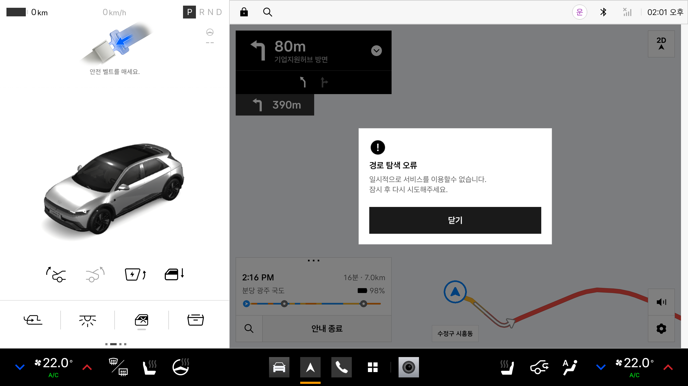
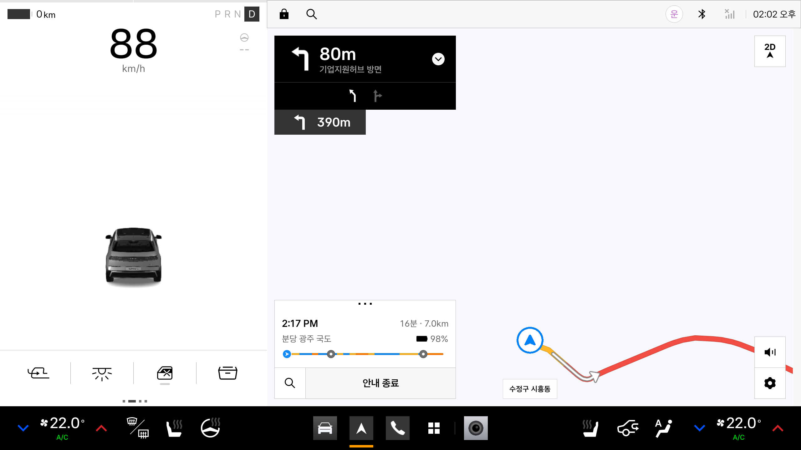

0km/h
PRND


0
05:42 오후

팔당 노을구간 1/3
남한산성 고갯길
50.3km남은 거리
차 안 연출 · 창문·풍량·조명
연결된 음악 앱에 재생 요청
에움길 음성
시안으로 만든 재현 영상 · 센터 화면 바탕은 Pleos 에뮬레이터, 실내·도로는 연출 · 거리는 시간을 줄여 표시
에움길
내비는 길을 안내하고, 에움길은 그 길을 달리는 시간을 안내합니다.
시안으로 만든 재현 영상입니다. 실제 앱 화면이 아닙니다.
센터 화면 바탕: Pleos 에뮬레이터 캡처 · 실내와 3D 도로: 연출(도로 굽이와 고도는 코스 파일의 실제 경로)
위성 사진: Sentinel-2 cloudless by EOX IT Services GmbH (Contains modified Copernicus Sentinel data 2016) · 3D: three.js · 음성: macOS 음성 합성